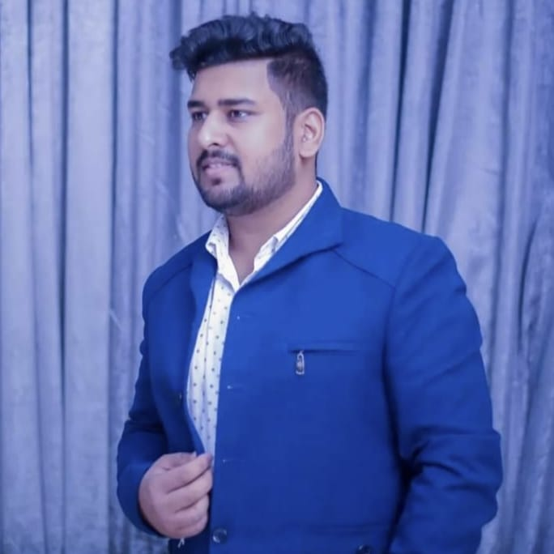

Aditya Jain
+91 8287067499 | adityajain98@proton.me
I'm a highly motivated and dedicated graduate in Computer Science with a B.Tech degree and a passion for technology or strong foundation in programming languages such as C++ and Python. My technical skills extend to web technologies like HTML, CSS, and JavaScript, and I'm proficient in utilizing tools such as Git and Visual Studio Code. I also delved into databases, working with MySQL and MongoDB. My track record of successful project management and leadership, as demonstrated my role leading a team of 30 students for a college project. I also committed to continuous learning, holding certifications in areas such as ethical hacking, networking, and microprocessors. I have a Master Diploma in Cyber Security, and a Diploma in Mechanical Engineering. With a solid educational background and a diverse skill set, I well-equipped to contribute to the success of any dynamic organization. You can find my work and projects on my GitHub and portfolio website, and I'm actively participates in coding challenges on platforms like LeetCode and GeeksforGeeks. I'm not only technically proficient but also an effective collaborator, goal-setter, and relationship-builder, making my invaluable asset to any team or project.
Projects
-
Discord Clone
Live Link: discord-clone-adityajain.netlify.app
Tech Stack: HTML, Tailwind CSS, Github
Designing a Discord clone website using HTML and Tailwind CSS while ensuring responsiveness involves creating a visually appealing and functional platform similar to Discord's interface.
-
Razorpay Clone
Live Link: razorpay-clone-aditya.netlify.app
Tech Stack: HTML, Tailwind CSS, Github
Designing a Razorpay clone website using HTML and CSS while ensuring responsiveness involves creating a user-friendly payment gateway interface similar to Razorpay's
-
Personal Portfolio
Live Link: adityaportfolio.live
Key Features: Home Page, About Me, Project Showcase, Skills, Resume/CV, Contact Information, Responsive Design
-
Jain Baker
Live Link: jainbaker.com
Designing an e-commerce website for "Jain Cakes & Bakes" using WordPress and a WordPress plugin for payment involves creating an online platform to showcase and sell bakery products while integrating a secure payment gateway.
Certifications
- 8085 & 8086 Microprocessor (June 2023) - Bharat Acharaya Edu.
- Certified Ethical Hacker (CEH V.12) (Nov 2022) - EC-COUNCIL
- Master in Wireshark (Oct 2022) - EC-COUNCIL
- Linux Essential (July 2022) - Craw Security
- Python (July 2022) - Craw Security
- In-Depth Advanced Networking (June 2022) - Craw Security
Skills
- Programming Languages: C++, Python
- Operating Systems: Windows, Linux
- Web Technologies: HTML, CSS, JavaScript
- Tools: Git, Visual Studio Code
- Databases: MySQL, MongoDB
- Other: Microsoft Office Suite
Links
Education
- Master Diploma - Cyber Security - 2022-2023 | Craw Security, Delhi
- B.Tech - Computer Science Engg. - 2021-2024 | Indira Gandhi University, Rewari
- Diploma - Mechanical Engg. - 2015-2018 | Govt. Polytechnic Lisana, Rewari
- CBSE 10th Board - 2014 | Delhi Jain Public School, Delhi
Languages
English, Hindi: First Language